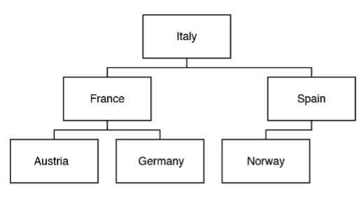
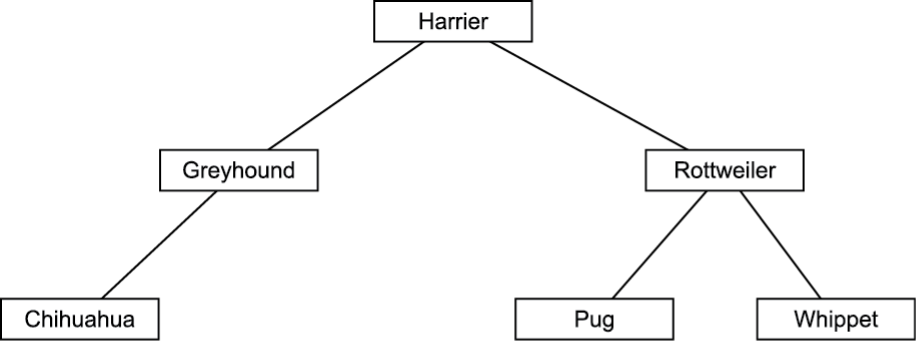

Arrays, Lists and Tuples
1 Beth records how many steps she has completed over a seven-day period.
She stores the total number of steps for each day in a text file. For example:
"9000", "13680", "11254", "8258", "12326", "9244", "7542"
Beth would like a program that will take the values from the text file and then
calculate the average number of steps per day.
The values from the text file are copied into a 1d-array called steps
when the program starts.
Beth passes the array steps into a function called
findAverage which will return the average number of steps.
i. An alternative data structure Beth could have used is a list.
Describe two differences between a list and an array.
• An array is static / cannot grow / shrink (at run-time)
• A list is dynamic / can grow / shrink
• Array values must be of the same type
• List values can be of different types
ii. Write the function findAverage that will accept the array
steps as a parameter and then return the average number of steps.
You should write your answer using pseudocode or program code.
function findAverage(steps)
total = 0
for count = 0 to steps.length - 1
total = total + steps[count]
next count
average = total / 7
return average
end function
2. Declare a 2D array towns with 8 rows and 3 columns.
array towns[8][3] as string
3(a). Describe one difference between an array and a list.
Array is fixed-size/static (and often single type); list is dynamic (and can hold mixed types).
3(b). State how a tuple differs from a list.
A tuple is immutable (cannot be changed at runtime); a list is mutable.
Records
Question
(a) Describe what is meant by a record structure.
A record structure stores multiple related items under one name, and the items (fields) can be of different data types.
Question
(b) The records for the players are stored in a 1D array. State why a 1D array is a suitable data structure for the records.
A 1D array allows easy access to each player record using an index, makes it easy to process each record in turn using a loop, and is suitable because the maximum number of players is known.
Question
(c) Three data structures are arrays, records and stacks. Identify one other data structure.
Queue (other acceptable answers include list, tuple, tree, graph, or linked list).
Linked Lists
1.A programmer is developing an ordering system for a fast food restaurant. When a member of staff inputs an order, it is added to a linked list for completion by the chefs.
Each element in a linked list has:
- a pointer, nodeNo, which gives the number of that node
- the order number, orderNo
- a pointer, next, that points to the next node in the list
Fig. 2.1 shows the current contents of the linked list, orders.
Ø represents a null pointer.
| nodeNo | orderNo | next |
|---|---|---|
| 0 | 154 | 1 |
| 1 | 157 | 2 |
| 2 | 155 | 3 |
| 3 | 156 | Ø |
Fig. 2.1
(i) Order 158 has been made and needs adding to the end of the linked list.
Add the order, 158, to the linked list as shown in Fig. 2.1. Show the contents of the linked list in the following table. [2]
| nodeNo | orderNo | next |
|---|---|---|
| 0 | 154 | 1 |
| 1 | 157 | 2 |
| 2 | 155 | 3 |
| 3 | 156 | 4 |
| 4 | 158 | Ø |
Explanation:
The new node (node 4) is added to the end of the list. The previous last node (node 3) now points to node 4.
(ii)Order 159 has been made. This order has a high priority and needs to be the second order in the linked list.
Add the order, 159, to the original linked list as shown in Fig. 2.1. Show the contents of the linked list in the following table. [3]
| nodeNo | orderNo | next |
|---|---|---|
| 0 | 154 | 4 |
| 4 | 159 | 1 |
| 1 | 157 | 2 |
| 2 | 155 | 3 |
| 3 | 156 | Ø |
Explanation:
The new node (node 4) is inserted after the first node. Node 0 now points to node 4, and node 4 points to node 1.
2.A program needs to store the names of plants that are in a garden, so they can be easily found and accessed in alphabetical order.
The data is stored in a tree structure. Part of the tree is shown in Fig. 2.1 The elements in the tree are read into a linked list producing an alphabetised list.
| Data item | Data | NextPointer |
|---|---|---|
| 0 | Begonia | |
| 1 | Daisy | |
| 2 | Hosta | |
| 3 | Lily | |
| 4 | Peony | |
| 5 | Rose | |
| 6 | Sunflower | |
| 7 | ||
| 8 |
(i) Complete the following table to show the linked list for the data. [2]
| Data item | Data | NextPointer |
|---|---|---|
| 0 | Begonia | 1 |
| 1 | Daisy | 2 |
| 2 | Hosta | 3 |
| 3 | Lily | 4 |
| 4 | Peony | 5 |
| 5 | Rose | 6 |
| 6 | Sunflower | null |
| 7 | ||
| 8 |
(ii)A new plant, Lavender, needs adding to the linked list. The linked list must retain its alphabetical order.
Complete the table to show the linked list after Lavender is added. [3]
| Data item | Data | NextPointer |
|---|---|---|
| 0 | Begonia | |
| 1 | Daisy | |
| 2 | Hosta | |
| 3 | Lily | |
| 4 | Peony | |
| 5 | Rose | |
| 6 | Sunflower | |
| 7 |
| Data item | Data | NextPointer |
|---|---|---|
| 0 | Begonia | 1 |
| 1 | Daisy | 2 |
| 2 | Hosta | 7 |
| 3 | Lily | 4 |
| 4 | Peony | 5 |
| 5 | Rose | 6 |
| 6 | Sunflower | null |
| 7 | Lavender | 3 |
Lavender is inserted between Hosta and Lily to preserve alphabetical order.
(iii)Hosta needs removing from the linked list.
Explain how a data item is removed from a linked list. Use the removal of Hosta in your answer. [4]
- Traverse the list to find the item before the one to be removed (Daisy)
- Find the NextPointer of the item being removed (Hosta → 7)
- Update the previous item’s NextPointer to skip Hosta
- Daisy’s NextPointer is updated from 2 to 7 (Lavender)
(iv)The linked list is stored as a 2D array with the identifier plantList. The index of the first element is stored in firstElement.
Write an algorithm to follow the pointers and output the contents of the linked list in alphabetical order. Add comments to explain your code. [5]
currentElement = firstElement // start at first node
while currentElement != null // loop until end of list
print(plantList[currentElement, 0]) // output data
currentElement = plantList[currentElement, 1] // move to next node
endwhileStacks
1.
A computer program stores data input on a stack named dataItems. The stack has two sub-programs to add and remove data items from the stack. The stack is implemented as a 1D array, dataArray.
The current contents of dataItems are shown below:
| TOP → | 6 |
| 15 | |
| 100 | |
| 23 |
The main program asks a user to push or pop an item from the stack. If the user chooses push, the data item is added to the stack. If the user chooses pop, the next item is removed from the stack, multiplied by 3 and output.
Main program:
userAnswer = input("Would you like to push or pop an item?")
if userAnswer == "push" then
push(input("Enter data item"))
else
print(pop() * 3)
endif(a)(ii)
push()
- Check if the stack is full
- If not full, insert the item
- If full, return or output an error
pop()
- Check if the stack is empty
- If empty, return or output an error
- If not empty, remove and return the top item
(b)The stack is implemented as a 1D array, dataArray. Describe how a 1D array can be set up and used to push and pop items as a stack. [3]
- The array size is defined
- A stack pointer is used to point to the top of the stack
- When an item is pushed, the stack pointer is incremented
- When an item is popped, the stack pointer is decremented
2.A user enters whole numbers into a computer program. Each number entered is placed onto a stack. The stack is created using an array with a maximum of 20 elements.
Part of the array, numStack, is shown when one number has been input. The pointer, top, points to the next free space in the stack.
| Index | stackItem | |
|---|---|---|
| 8 | ||
| 7 | ||
| 6 | ||
| 5 | ||
| 4 | ||
| 3 | ||
| 2 | ||
| TOP → | 1 | |
| 0 | 20 |
A function, addItem, takes a number as a parameter and adds the number to the stack. The function returns true if this was successful, and false if the stack is already full.
Understanding:
- The stack uses an array of fixed size (20)
- The top pointer tracks the next free position
- Items are added and removed from the top only
(iii)Give one reason why a function is used instead of a procedure in this scenario. [1]
A function is used because it returns a value (true or false), whereas a procedure does not return a value.
(iv)The function addItem is written but incomplete. Complete the function addItem. [5]
function addItem(number)
if top = __ then
return false
else
numStack[top] = _________
top = _____ + 1
________ _________
endif
endfunctionfunction addItem(number)
if top = 20 then
return false
else
numStack[top] = number
top = top + 1
return true
endif
endfunctionMark scheme points:
- Correct function header
- Check if stack is full
- Add value to stack
- Increment top pointer
- Return true/false correctly
(b)An encryption routine reads a line of text from a file, reverses the order of the characters and subtracts 10 from the ASCII value of each letter, then saves the new string into the same file.
Describe the steps the program would take to encrypt the characters stored in the stack and save them in a single variable. [5]
- Pop a character from the stack
- Convert the character to its ASCII value
- Subtract 10 from the ASCII value
- Convert back to a character
- Append/concatenate the character to a variable
(ii)The method push() accepts an integer as a parameter and adds it to the top of the stack unless the stack is already full.
If the push is successful the method returns true. If the push is unsuccessful due to the stack being full the method returns false.
Write the method push() using either pseudocode or program code. [6]
function push(value)
if pointerValue < 100 then
stackArray[pointerValue] = value
pointerValue = pointerValue + 1
return true
else
return false
endif
endfunctionMark scheme points:
- Correct function header
- Takes a parameter
- Checks if the stack is full
- Adds value to top of stack
- Increments stack pointer
- Returns true or false correctly
(iii) The main program initialises a new object of type stack with the identifier mathsStack.
Write pseudocode or program code to declare the object. [2]
mathsStack = new stack()(iv) The main program needs to:
- take numbers as input from the user
- push them onto the stack mathsStack until the stack is full
- output an appropriate message if the stack is full
Complete the pseudocode algorithm to meet these requirements. [4]
returnValue = true
while returnValue == __________
returnValue = mathsStack.__________(input("Enter Number"))
if returnValue == __________ then
__________("Stack full")
endif
endwhilereturnValue = true
while returnValue == true
returnValue = mathsStack.push(input("Enter Number"))
if returnValue == false then
print("Stack full")
endif
endwhile(v) The main program also needs to:
- remove one item from the stack at a time and add this to a total
- output the total every time an item is removed
- stop removing items when either the stack is empty or 20 items have been removed
Write pseudocode or program code to meet these requirements. [8]
total = 0
quantity = 0
returnValue = 0
while quantity < 20 and returnValue != -1
returnValue = mathsStack.pop()
if returnValue != -1 then
quantity = quantity + 1
total = total + returnValue
print(total)
endif
endwhile3(a). The contents of a stack are stored in the 1-dimensional array called numbers.
topStack stores the index of the next free space in the stack.
The array is declared with space for 100 elements.
The function pop() returns the next item from the stack and updates the appropriate pointers.
Describe the steps in the function pop(). [4]
3(b). The function push() inserts its parameter called dataValue onto the stack and updates the appropriate pointers.
Complete the function push() using pseudocode or program code.
function push(... ......................................)
if ................................... ! = 100 then
numbers [...................................] = dataValue
topStack = topStack + ...................................
return true
else
return false
endif
endfunction3(c). Write an algorithm, using pseudocode or program code, to call the function push() with the value 15 and output a message saying “Added” if the value was successfully inserted onto the stack or “Not Added” if the stack is full. [4]
Mark scheme answer
3(a) pop() steps (any valid wording):
- Check if the stack is empty / check topStack is equal to 0.
- If empty, return a suitable value (e.g. -1 / null) or give a warning / do nothing.
- If not empty, decrement topStack.
- Return the value in element topStack from the array numbers.
3(b) Completed push() function:
function push(dataValue)
if topStack != 100 then
numbers[topStack] = dataValue
topStack = topStack + 1
return true
else
return false
endif
endfunction3(c) Example algorithm to push 15 and output message:
result = push(15)
if result then
print("Added")
else
print("Not Added")
endifQueues
1(a). A program stores a queue of mathematical questions to be asked to a user. The questions are asked in the order they are added. Once a question has been asked it cannot be asked again. New questions are continually added to the end of the queue.
Describe why a queue is a suitable structure for this program. [3]
| Q1 | Q2 | Q3 | |
| head | tail |
- A queue operates using FIFO (First In, First Out)
- Questions are retrieved in the order they were added
- New questions are added to the end of the queue
1(b). Complete the following algorithm to remove and output the first element in the queue. [4]
procedure remove()
if head == tail + 1 then
print("No questions")
else
print(questions[head])
head = head + 1
endif
endprocedureMark scheme points:
- Check if the queue is empty
- Output an error/message if empty
- Output the element at index
head - Increment
head
Queue Class Data Structure
Kamran is writing a program to manipulate the data for a set of items. The items are added to a queue for processing.
For each item, the program needs to store:
- Item name
- Cost
- Date of arrival
- Transferred (true/false)
The queue is defined as a class called itemQueue. The array theItems stores the items. The head pointer stores the index of the first element, the tail pointer stores the index of the next available space, and numItems stores the number of items in the queue.
| Index | 0 | 1 | 2 | 3 | 4 | 5 | 6 | 7 | 8 | 9 |
|---|---|---|---|---|---|---|---|---|---|---|
| Element | Data | Data | Data | Data | Data | Data | Data |
Next item will be added at index 0 (circular queue)
(i) Define the term queue. [2]
- A data structure
- First In, First Out (FIFO)
(ii) The attributes in itemQueue are all declared as private. Explain how a private attribute improves the integrity of the data. [2]
- Attributes are encapsulated and accessed only through methods
- Validation can be enforced before data is changed
- Prevents accidental or invalid modification
(iii) The constructor method creates a new instance of itemQueue and sets the head, tail and numItems attributes to 0. Write an algorithm for the constructor. [2]
public procedure new()
head = 0
tail = 0
numItems = 0
endprocedure(iv) Write an algorithm for the enqueue method. [6]
public function enqueue(newItem : Items) : boolean
if numItems = 10 then
print("Error: The queue is full")
return false
else
theItems[tail] = newItem
if tail = 9 then
tail = 0
else
tail = tail + 1
endif
numItems = numItems + 1
return true
endif
endfunction(v) Write a programming statement to declare an instance of itemQueue called myItems. [1]
myItems = new itemQueue()
(vi) Write a procedure insertItems() to ask the user to input item data and add the items to the queue until it is full. [5]
procedure insertItems()
newItem : Items
itemCount = myItems.getnumItems()
while itemCount < 10
newItem.itemName = input("Enter the item name")
newItem.cost = input("Enter the item cost")
newItem.dateArrival = input("Enter the date of arrival")
newItem.transferred = input("Has it been transferred?")
myItems.enqueue(newItem)
itemCount = itemCount + 1
endwhile
myItems.setnumItems(itemCount)
endprocedure(vii) When the main program ends, the items and the queue no longer exist. Describe how Kamran could amend the program so the items and queue still exist the next time the program is run. [2]
Store the items and queue in an external file when the program closes, and load them from the file when the program starts.
3. The array queue shown below is set up to hold a small queue. Assume that there is sufficient storage to hold all necessary additions to the queue.
The table below shows variables that are used to maintain the queue:
| Variable | Type | Purpose |
|---|---|---|
| front | integer | Pointer to the front element of the queue |
| rear | integer | Pointer to the rear element of the queue |
| queue_full | Boolean | Indicates whether the queue is full |
| max | integer | The maximum size of the queue |
Shown below is an algorithm that is intended to add an item to the queue.
procedure add_to_queue(item)
if rear == max then
queue_full = true
else
front = front + 1
queue[front] = item
endif
endprocedureThis procedure attempts to add an item to the queue but contains a logic error.
Identify the parameter that is passed to this procedure. [1]
item
Describe the logical decision that is made. [2]
- The queue is checked to see if it is full
- If it is full, the process stops
- If it is not full, the item is added
This algorithm contains a logic mistake. Explain what the mistake is. [2]
- The front pointer is incremented
- The item is placed at (or near) the front of the queue
- Items should be added at the rear of the queue
Rewrite the algorithm to correct the mistake. [2]
rear = rear + 1
queue[rear] = item4. Describe how an array can be used to implement a queue data structure. [3]
- The queue uses a head pointer and a tail pointer
- When an item is enqueued, the tail pointer increments
- When an item is dequeued, the head pointer increments
5(a) The current contents of a queue data structure are shown.
State the purpose of headPointer and tailPointer in the queue.
headPointer: Identifies the first item in the queue / the item to be removed next (dequeue).
tailPointer: Identifies the next free space in the queue / where the next item will be added (enqueue).
(b) enqueue adds data to the queue and dequeue removes data.
Show the contents of the queue and the position of both pointers after the following actions:
enqueue(20)dequeue()dequeue()
The value 20 is added at the position indicated by tailPointer.
Each dequeue moves headPointer forward by one position.
The remaining queue contents stay in the same array positions; items are not shifted.
headPointer points to the next item to be removed, and tailPointer points to the next free space.
(c) The queue stores ID numbers of jobs. Some jobs have priority and must be processed first.
Explain why this queue is not suitable for this program.
A queue is a FIFO (First In, First Out) structure.
Jobs cannot be inserted at the front or reordered based on priority.
Higher-priority jobs cannot be processed before earlier jobs, making a standard queue unsuitable.
Binary Trees
Exam Style Questions
1(a) Describe what is meant by a binary tree.
A binary tree is a hierarchical, non-linear data structure where each node can have a maximum of two children, usually called the left and right child.
1(b) Explain one advantage of using a binary search tree instead of a one-dimensional array to store ordered data.
Searching for a value in a balanced binary search tree is faster, with a time complexity of O(log n), compared to O(n) for a one-dimensional array.
1(c) State the order in which the nodes of a binary tree are visited during an in-order traversal.
Left subtree, root node, right subtree.
2. A program stores entered data in a binary search tree.
The current contents of the tree are shown:

A pseudocode algorithm is written to search the tree to determine if the data item “Sweden” is in the tree.
The function currentNode.left() returns the node positioned to the left of currentNode.
The function currentNode.right() returns the node positioned to the right of currentNode.
Complete the algorithm.
thisNode = getData(currentNode)
if thisNode == searchValue then return true
elseif thisNode < searchValue then
if currentNode.left() != null then return searchForData(currentNode.left(), searchValue)
else return false
else
if currentNode.right() != null then return searchForData(currentNode.right(), searchValue)
else return false
3. Identify two preconditions needed of a tree for this algorithm to work. [2]
It is a binary tree.
It is ordered / sorted.
4(a). A data structure is shown below in Fig. 4.1.

Identify the data structure shown in Fig. 4.1. [1]
Tree / undirected graph
4(b) Explain the difference between a depth-first (post-order) traversal and a breadth-first traversal. [4]
Depth-first explores one branch fully before backtracking and uses a stack.
Breadth-first visits all nodes at each level before moving down and uses a queue.
5. Show how a depth-first (post-order) traversal would find the path between node A and node X for the structure shown in Fig. 4.1. [6]
D → K → L → H → B → G (X)
6. Kira uses a tree data structure shown in Fig. 1 to identify the range of possible moves the computer can make.

Show how a breadth-first traversal would traverse the tree shown in Fig. 1. [4]
A
B, C, E
D, F, G, H
I, J
7. A binary search tree, numbers, stores numbers that are entered into a computer. The contents of the tree are shown below:

Explain how a depth-first (post-order) traversal is performed. [5]
Visit left subtree, then right subtree, then root.
Example order: 5, 31, 20, 48, 45, 60, 92, 88, 98, 76, 50
8. Explain how a breadth-first traversal is performed. [5]
Visit root first, then all children, then grandchildren.
Example order: 50, 45, 76, 20, 48, 60, 98, 5, 31, 88, 92
Question
9(a) A binary search tree is used to store the names of dog breeds.
Fig. 7.1

The breeds Doberman and Dalmatian are added to the tree in that order. Add them to Fig. 7.1. [2]
Doberman is inserted by comparing alphabetically and placed accordingly.
Dalmatian is then compared and inserted in the correct left/right position based on alphabetical order.
9(b) Explain how you would determine if the breed Pug is in the binary search tree. [3]
Pug > Harrier, so move to the right.
Pug < Rottweiler, so move to the left.
Pug is found in the tree.
Question
9 (c) Explain how you would determine if the breed Spaniel is in the binary search tree. [3]
Spaniel > Harrier, so move right.
Spaniel > Rottweiler, so move right.
Spaniel < Whippet but there is no child node, so Spaniel is not in the tree.
Graphs
Exam Style Questions
1. A graph traversal algorithm uses a queue and visits nodes level by level. Identify this traversal algorithm.
Breadth-first search (BFS).
2. Describe one difference between an adjacency list and an adjacency matrix.
An adjacency list stores each node with a list of its connected nodes, while an adjacency matrix uses a two-dimensional array to show connections between all nodes.
3. Explain why a breadth-first search is suitable for finding the shortest path in an unweighted graph.
Breadth-first search explores nodes level by level, so the first time a node is reached it is via the shortest possible path in an unweighted graph.
Fig. 5 shows a graph data structure representing a small section of a parcel delivery network. Each node represents an address where deliveries need to be made. The edges show the possible routes and distances between these deliveries.
Give one reason why the graph is a visualisation of the problem. [1]
Mark scheme answer (any one):
- Symbols are used to represent the address
- The edges represent possible connections between addresses, not the actual physical routes
4. A software company is developing a navigation system using an object-oriented
programming (OOP) language.
The system stores a road network as a graph. Each junction is represented by an object of class Node.
Each road is represented by an object of class Edge.
The Node class has the following methods:
getNeighbours() – returns a list of neighbouring Node objects
getName() – returns the name of the junction
(a) Explain why a breadth-first search (BFS) algorithm is suitable for finding the shortest path between two
junctions in this graph. [3]
(b) The program uses a breadth-first search starting from a given Node.
Complete the pseudocode below to implement the BFS algorithm using OOP principles. [6]
procedure bfs(startNode)
visited = empty list
q = empty queue
enqueue(q, startNode)
while q is not empty
current = dequeue(q)
if current not in visited then
add current to visited
for each neighbour in current.__________()
if neighbour not in visited then
__________(q, neighbour)
endif
endfor
endif
endwhile
endprocedure (c) State one advantage of implementing this graph traversal using an object-oriented approach rather than a procedural approach. [2]
(a)
Breadth-first search explores the graph level by level.
In an unweighted graph, the first time a node is reached is via the shortest path.
Therefore BFS guarantees the shortest path between two nodes.
(b)
getNeighbours()
enqueue(q, neighbour)
(c)
Encapsulation means each Node object manages its own data and connections.
This makes the code easier to maintain, reuse, and extend.
Hash Tables
1. Compare BST efficiency vs hash table for searching.
A hash table is generally faster for lookups (direct access using the hashed key, ideally constant time), while a BST requires comparisons down the tree (typically logarithmic).
6(a) A programmer is writing software for a firewall. She is writing code so that it keeps a track of websites that users are permitted to visit. The software stores the websites’ addresses along with details about who can view them and when.
The following data is also stored about each website:
- Access level needed (1–4)
- If it is available all the time (
true) or just lunch times and out of work hours (false).
So a website which is available to users of access level 2 and above, all the time, would have the details
[2, true] stored.
A website accessible to users of access level 3 and above, only outside of work hours, would have the details
[3, false] stored.
A flaw with the current hash function is it tends to generate lots of collisions (addresses that compute to the same hash).
Below is a diagram of part of the hash table. The address www.rnd.com with details [2, true] is being
added to the hash table.
Explain how a hash table can be used to handle collisions, referring to the example below.
| Index | Stored value |
|---|---|
| 227 | |
| 228 | www.ocr.org.uk : [1, true] |
| 229 | |
| 230 | www.ppf.nz : [2, false] |
| 231 | |
| 232 | www.ntf.biz : [4, true] |
| 234 | |
| 235 |
• www.rnd.com would cause a collision with www.ocr.org.uk / would hash to the same position as
www.ocr.org.uk (228).
• Linear probing could be used:
– Move through the structure one space at a time
– …to find the next free space / 229
• Chaining could be used:
– Each location points (to the start of) a linked list
– The new item is added to the end of the linked list / free
• Overflow area method:
– Points to an overflow area
– The new item is stored with the other values in the same area
Accept a separate or annotated diagram showing a method on given example.
(1 per –, max 4)

(b) The hash function is changed so there are no longer high numbers of collisions. During busy periods the firewall is expected to check several addresses a second. It is anticipated that roughly 10 new addresses will be added to a whitelist (list of acceptable addresses) each day.
There is a debate as to whether a hash table (with the new hash function) is the best approach, or if the whitelist would be better stored in a linked list.
Discuss whether a hash table or linked list is better to store acceptable websites. You should compare how each structure can be searched and has data added and come to a recommendation as to which is better for the whitelist.
Searching a linked list involves starting at the first node and following the pointers until either the desired value is found, or the end of the list is reached, meaning the item is not in the list.
As the linked list grows, searching takes longer. If the list doubles in size it will, on average, take twice as long to search. A list of size n takes on average n/2 checks, which is O(n) (linear complexity).
Searching a hash table requires the key to be hashed and the correct location accessed. If collisions are ignored, the time taken to find an item remains the same regardless of the size of the whitelist, giving O(1) (constant complexity).
As the whitelist grows, collisions become more likely. Linear probing or chaining means that once a location has been found, the time taken increases with the number of collisions at that location. However, this still performs significantly better than a linked list.
Adding items to a linked list is constant time if items are added to the end and the last node is stored. If items are added in order, the time to add items increases linearly due to the need to search for the correct position.
Adding items to a hash table involves hashing the key and placing it in the correct location. This is constant time unless collisions occur, in which case there is an overhead that grows with the number of collisions.
Overall, a hash table is likely to be the best option, assuming it has enough space and a good hashing algorithm with few collisions. It provides very consistent performance even as the whitelist grows.
3. A coach company offers tours of the UK.
The program stores records about its customers.
Often an individual customer’s record needs to be accessed. This is done by searching using the Customer ID.
Explain why a hash table is better suited than a linked list to store the customer records, particularly as the company acquires more customers.
Searching a linked list requires starting at the first node and checking every node until the required record is found or the end of the list is reached.
As more customers are added, a linked list takes longer to search because more nodes must be checked.
A hash table allows direct access to the location of a record by hashing the Customer ID.
The time taken to search a hash table stays the same even as more customer records are added, making it more suitable as the company grows.
Some candidates may refer to time complexity, describing linked lists as linear O(n) and hash tables as constant O(1). These points together gain full credit.
4(a) A bus runs between two cities. There are a number of stops on the bus route labelled StopA, StopB and so on. The timetable for the route is represented as a hash table. For each entry in the hash table the key is the bus stop code and the data attached to it is a (zero indexed) array of the times a bus arrives at the stop. The times are stored as strings.
An extract of the hash table is shown:
times =
{
"StopA": ["06:55", "07:25", "07:55", "08:55", "09:55", "11:55", "14:00", "15:00", "15:30", "16:00"],
"StopB": ["06:40", "07:40", "08:40", "09:20", "09:40", "14:00", "15:00", "16:00", "16:30"]
}
print(times["StopA"][1]) displays 07:25.
State what the code print(times["StopB"][4]) displays.
09:40
4(b) Write a function called timeValue that, given a time stored in
a string, returns the equivalent integer (using thousands and hundreds for the hours and tens
and units for the minutes).
The given string should be assumed to represent the time in the 24-hour clock in the format HH:MM.
timeValue("07:55") should return 755
timeValue("15:30") should return 1530
function timeValue(givenTime)
minutes = int(givenTime.substring(3,2))
hours = int(givenTime.substring(0,2)) * 100
return hours + minutes
endfunction
(c) Write code for a function that takes in the name of a stop
(stopName) and the current time as an integer
(currentTime) in the format described in part (b)
(using thousands and hundreds for the hours and tens and units for the minutes).
It should return the time of the next available bus in the string format.
If there are no more buses available that day it should return the string
“No buses”.
Example nextBus("StopA", 1013) should return “11:55”
function nextBus(stopName, currentTime)
Correct stop array extracted/referenced in code (1)
Sensible attempt to iterate through the array (1)
Program returns time of next bus (1)
Program returns No Buses when no more buses left. (1)
Program runs without an index out of bounds error (You may assume short circuit evaluation i.e. if the array is in the second part of an and condition it won’t be checked if the first half evaluates to false.) (1)
count = 0
timesLeft = true
timesList = times[stopName]
while timesLeft == true and
timeValue(timesList[count]) < currentTime
count = count + 1
if count == timesList.length then
timesLeft = false
endif
endwhile
if timesLeft == true then
return timesList[count]
else
return "No Buses"
endif